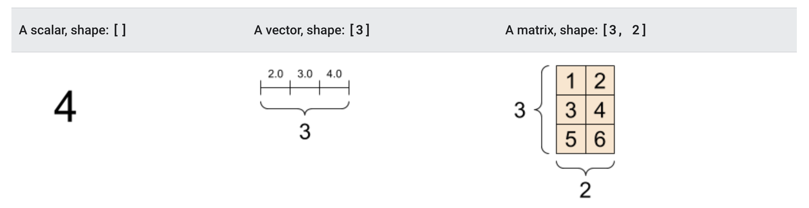
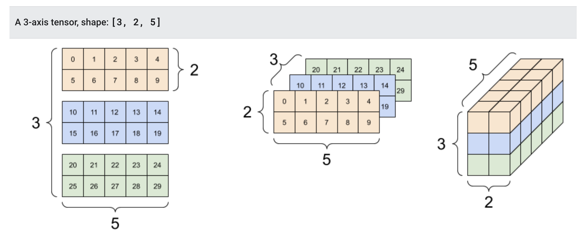
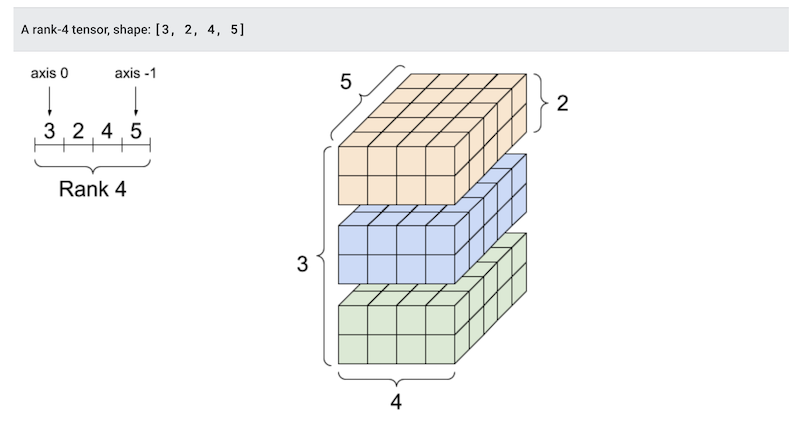

import torch
import numpy as np
import matplotlib.pyplot as plt
from sklearn.datasets import make_moons
import tqdm
from sklearn.inspection import DecisionBoundaryDisplay
def plot_boundary(model, X, y, alpha=1, title=''):
xrange = (-X[:, 0].min() + X[:, 0].max()) / 10
yrange = (-X[:, y].min() + X[:, y].max()) / 10
feature_1, feature_2 = np.meshgrid(
np.linspace(X[:, 0].min() - xrange, X[:, 0].max() + xrange, 250),
np.linspace(X[:, 1].min() - yrange, X[:, 1].max() + yrange, 250)
)
grid = np.vstack([feature_1.ravel(), feature_2.ravel()]).T
y_pred = np.reshape(model.predict(torch.tensor(grid).float()).detach().numpy(), feature_1.shape)
display = DecisionBoundaryDisplay(
xx0=feature_1, xx1=feature_2, response=y_pred
)
display.plot()
display.ax_.scatter(
X[:, 0], X[:, 1], c=y, alpha=alpha, edgecolor="black"
)
plt.title(title)
plt.show()Lecture 7: PyTorch
Introduction to PyTorch
The most basic object in PyTorch is a tensor. Tensor objects behave much like the AutogradValue objects we are creating in the homework! We can create a tensor object with a given value as follows
x = torch.tensor(4.)
xtensor(4.)Performing basic operations on tensor objects gives tensor objects.
a = x ** 2 + 5
atensor(21.)tensor objects also support reverse-mode automatic differentiation! To use this, we must specify that we will want to compute the derivative with respect to a given tensor. We can do this with the requires_grad argument.
x = torch.tensor(4., requires_grad=True)Once we have a tensor that requires_grad, we can perform operations on it to compute a loss.
a = x ** 2 + 5
L = torch.log(a) # Functions like log must be called through torch
Ltensor(3.0445, grad_fn=<LogBackward0>)Once we have a loss running the backward pass is done exactly as in the homework. First we call backward() on the loss tensor object, then we can access the derivative through the grad property of x.
L.backward()
x.gradtensor(0.3810)We can also create tensor objects that wrap arrays.
x = torch.tensor(np.array([3, 4, 5]))
xtensor([3, 4, 5])We can also just directly create tensors as we would numpy arrays
x = torch.tensor([3, 4, 5])
xtensor([3, 4, 5])Including convienience constructors.
print(torch.ones((5,)))
print(torch.zeros((2, 3)))tensor([1., 1., 1., 1., 1.])
tensor([[0., 0., 0.],
[0., 0., 0.]])Automatic differentiation still works for arrays. In this case it gives use the gradient of the loss (hence the grad property).
x = torch.tensor([3., 4., 5.], requires_grad=True)
L = torch.sum(x ** 2)
Ltensor(50., grad_fn=<SumBackward0>)L.grad/var/folders/ct/cvh0qs6j5rlbcp004rxwtwh80000gn/T/ipykernel_16850/323164392.py:1: UserWarning: The .grad attribute of a Tensor that is not a leaf Tensor is being accessed. Its .grad attribute won't be populated during autograd.backward(). If you indeed want the .grad field to be populated for a non-leaf Tensor, use .retain_grad() on the non-leaf Tensor. If you access the non-leaf Tensor by mistake, make sure you access the leaf Tensor instead. See github.com/pytorch/pytorch/pull/30531 for more informations. (Triggered internally at /Users/runner/work/pytorch/pytorch/pytorch/build/aten/src/ATen/core/TensorBody.h:494.)
L.gradL.backward()
x.gradtensor([ 6., 8., 10.])We can convert tensor objects back to numpy by calling x.detach().numpy(). (detach removes the variable from any automatic differentiation computations)
x.detach().numpy()array([3., 4., 5.], dtype=float32)At this point it’s probably worth remarking on where the name tensor comes from.
So far we’ve discussed 3 kinds of array objects - Scalars: which are just single values (0-dimensional) - Vectors: 1-dimensional arrays of numbers - Matrices: 2-dimensional arrays of numbers

A tensor is the generalization of a vector or matrix to any number of dimensions. For example, a 3-dimensional tensor can be seen in multiple ways.

A tensor object can be created with any number of dimensions. For example, we could create a 2x2x2 tensor as:
t = torch.tensor([[[1, 2], [3, 4]], [[5, 6], [7, 8]]])
ttensor([[[1, 2],
[3, 4]],
[[5, 6],
[7, 8]]])Or we could create the tensor in the image using arange and reshape.
t = torch.arange(30).reshape((3, 2, 5))
ttensor([[[ 0, 1, 2, 3, 4],
[ 5, 6, 7, 8, 9]],
[[10, 11, 12, 13, 14],
[15, 16, 17, 18, 19]],
[[20, 21, 22, 23, 24],
[25, 26, 27, 28, 29]]])4-dimensional tensors can also be visualized

t = torch.ones((3, 2, 4, 5))
t.shapetorch.Size([3, 2, 4, 5])There are some notable differences between torch and numpy when it comes to operations. The important one to watch out for at this point is matrix multiplation. In numpy we accomplished with with np.dot:
x = np.ones((4, 5))
w = np.ones((5, 2))
np.dot(x, w)array([[5., 5.],
[5., 5.],
[5., 5.],
[5., 5.]])In PyTorch torch.dot only does vector dot products and thus only applies to 1-dimensional tensor objects:
x = torch.ones((4, 5))
w = torch.ones((5, 2))
torch.dot(x, w)--------------------------------------------------------------------------- RuntimeError Traceback (most recent call last) Cell In[18], line 3 1 x = torch.ones((4, 5)) 2 w = torch.ones((5, 2)) ----> 3 torch.dot(x, w) RuntimeError: 1D tensors expected, but got 2D and 2D tensors
Instead we use the torch.matmul function for this purpose
torch.matmul(x, w)tensor([[5., 5.],
[5., 5.],
[5., 5.],
[5., 5.]])PyTorch also has many handy built-in functions that numpy doesn’t have, such as sigmoid.
x = torch.linspace(-5, 5, 50)
s = torch.sigmoid(x)
plt.plot(x, s)
This makes it very easy to implement something like logistic regression.
class LogisticRegression:
def __init__(self, dims):
self.weights = torch.ones((dims,), requires_grad=True)
self.bias = torch.zeros((), requires_grad=True)
def predict_probability(self, X):
f_X = torch.matmul(X, self.weights) + self.bias
return torch.sigmoid(f_X)
def predict(self, X):
return self.predict_probability(X) > 0.5Let’s try loading a dataset, converting it to tensor and making predictions
X, y = make_moons(noise=0.1)
X, y = torch.tensor(X).float(), torch.tensor(y)
model = LogisticRegression(2)
plot_boundary(model, X, y)
When working with PyTorch, it is convention to separate the loss function from the model, where the loss function will just take predictions and labels.
def NLL(pred, y):
LL = y * torch.log(pred) + (1. - y) * torch.log(1. - pred)
return -LL.sum()Gradient descent
Gradient descent is also implemented in PyTorch in the optim module.
from torch import optimGradient descent works a bit differently in PyTorch than what we’ve seen. We first need to construct a gradient descent object which specifies which values we’re optimizing and what the learning rate will be. We specify the values to optimize by simply passing a list of weights/parameters to the constructor.
In PyTorch, basic gradient descent is encapsulated in the optim.SGD class (SGD stands for stochastic gradient descent, we’ll talk about what stochastic means in this context next week.)
optimizer = optim.SGD([model.weights, model.bias], lr=0.1)Notice that this object doesn’t even take in the function we’re trying to optimize, only the inputs. We need to call the function ourselves and run backward() to compute the gradients.
predictions = model.predict_probability(X)
loss = NLL(predictions, y)
loss.backward()Let’s look at our model weights
model.weights
model.weights.gradtensor([-4.7607, 24.2053])We can take a single step of gradient descent using the step method of the optimizer.
optimizer.step()
model.weightstensor([ 1.4761, -1.4205], requires_grad=True)We see that this actually updates the weights themselves!
It’s important to note that in PyTorch, calling backward does not clear the value stored in grad. So computing the gradient multiple times will result in updates to the gradient.
print(model.weights.grad)
NLL(model.predict_probability(X), y).backward()
print(model.weights.grad)
NLL(model.predict_probability(X), y).backward()
print(model.weights.grad)tensor([-4.7607, 24.2053])
tensor([-16.7788, 28.5052])
tensor([-28.7969, 32.8051])We can clear the stored gradients using the optimizer.
optimizer.zero_grad()
print(model.weights.grad)NoneSo far we’ve only taking a single step of gradient descent. In order to run many steps, we need to write a loop to do everything we just saw.
for i in range(10):
predictions = model.predict_probability(X)
loss = NLL(predictions, y)
loss.backward()
optimizer.step()
optimizer.zero_grad()
print(loss.item())48.57537078857422
45.778987884521484
34.46326446533203
31.891359329223633
30.088228225708008
29.1723690032959
28.560819625854492
28.1513671875
27.85077667236328
27.623899459838867We should now see that our model has been optimized!
plot_boundary(model, X, y)
torch.nn
While PyTorch as a tool for automatic differentiation and optimization would be useful by itself. It actually gives us a lot more than that!
On of the most important features of PyTorch is its model-building tools in the torch.nn module. This gives us a lot of powerful features that we can use to build complex neural networks!
from torch import nnLet’s start by building out logistic regression model in the torch.nn framwork. In order for a model to benefit from torch.nn our model class needs to inheret from nn.Module
class LogisticRegression(nn.Module):
def __init__(self, dims):
super().__init__()
self.weights = nn.Parameter(torch.ones((dims,)))
self.bias = nn.Parameter(torch.zeros(()))
def forward(self, X):
return torch.sigmoid(torch.matmul(X, self.weights) + self.bias)
def predict_probability(self, X):
return self.forward(X)
def predict(self, X):
return self.forward(X) > 0.5There are 2 changes to note here. The first is that we wrapped our weights and bias terms in nn.Parameter. This tells PyTorch that these are the parameters we will want to optimize. We don’t need to specify requires_grad for parameters, PyTorch will take care of that for us.
The second is that we moved the implmentation of predict_probability to forward. In PyTorch models the forward method is special, it defines the model as a function. If we call the model as a function forward will be called internally.
model = LogisticRegression(2)
model(X)tensor([0.7305, 0.8683, 0.7427, 0.7991, 0.4372, 0.7363, 0.7902, 0.7656, 0.5393,
0.5377, 0.9048, 0.6320, 0.6527, 0.6924, 0.7571, 0.7060, 0.8284, 0.8932,
0.3519, 0.7867, 0.6170, 0.4513, 0.8379, 0.7750, 0.5154, 0.6055, 0.4592,
0.8987, 0.5850, 0.6511, 0.7356, 0.7790, 0.3614, 0.3426, 0.5442, 0.9342,
0.5163, 0.2998, 0.6279, 0.4478, 0.7750, 0.6629, 0.3759, 0.5662, 0.7499,
0.5329, 0.5134, 0.7595, 0.6054, 0.5121, 0.5150, 0.5945, 0.6725, 0.7541,
0.4070, 0.8189, 0.7298, 0.7243, 0.8743, 0.8049, 0.6129, 0.2588, 0.3376,
0.5753, 0.8009, 0.6491, 0.4945, 0.7793, 0.5371, 0.7842, 0.8440, 0.8604,
0.7789, 0.8950, 0.8835, 0.5558, 0.2843, 0.7081, 0.5940, 0.8376, 0.7560,
0.6894, 0.5641, 0.5032, 0.8518, 0.6594, 0.8278, 0.8399, 0.8019, 0.5121,
0.7942, 0.5651, 0.6802, 0.5053, 0.8377, 0.5878, 0.7472, 0.9290, 0.5684,
0.7987], grad_fn=<SigmoidBackward0>)This means that we can use instances of nn.Module as parameterized functions. For example, we might create a general linear (technically affine) function in the same way.
\[f(\mathbf{x}) = \mathbf{x}^T\mathbf{W}^T + \mathbf{b}, \quad f: \mathbb{R}^i \rightarrow \mathbb{R}^o\]
Note that here we are not assuming an augmented representation of \(\mathbf{x}\).
class Linear(nn.Module):
def __init__(self, inputs, outputs):
super().__init__()
self.weightsT = nn.Parameter(torch.ones((inputs, outputs)))
self.bias = nn.Parameter(torch.zeros((outputs,)))
def forward(self, X):
return torch.matmul(X, self.weightsT) + self.biasWe can use this module to implement out logistic regression model above.
class LogisticRegression(nn.Module):
def __init__(self, dims):
super().__init__()
self.linear = Linear(dims, 1) # Dims input 1 output
def forward(self, X):
return torch.sigmoid(self.linear(X)).reshape((-1,)) # Turn output into a vector
def predict_probability(self, X):
return self.forward(X)
def predict(self, X):
return self.forward(X) > 0.5model = LogisticRegression(2)
model(X)tensor([0.7305, 0.8683, 0.7427, 0.7991, 0.4372, 0.7363, 0.7902, 0.7656, 0.5393,
0.5377, 0.9048, 0.6320, 0.6527, 0.6924, 0.7571, 0.7060, 0.8284, 0.8932,
0.3519, 0.7867, 0.6170, 0.4513, 0.8379, 0.7750, 0.5154, 0.6055, 0.4592,
0.8987, 0.5850, 0.6511, 0.7356, 0.7790, 0.3614, 0.3426, 0.5442, 0.9342,
0.5163, 0.2998, 0.6279, 0.4478, 0.7750, 0.6629, 0.3759, 0.5662, 0.7499,
0.5329, 0.5134, 0.7595, 0.6054, 0.5121, 0.5150, 0.5945, 0.6725, 0.7541,
0.4070, 0.8189, 0.7298, 0.7243, 0.8743, 0.8049, 0.6129, 0.2588, 0.3376,
0.5753, 0.8009, 0.6491, 0.4945, 0.7793, 0.5371, 0.7842, 0.8440, 0.8604,
0.7789, 0.8950, 0.8835, 0.5558, 0.2843, 0.7081, 0.5940, 0.8376, 0.7560,
0.6894, 0.5641, 0.5032, 0.8518, 0.6594, 0.8278, 0.8399, 0.8019, 0.5121,
0.7942, 0.5651, 0.6802, 0.5053, 0.8377, 0.5878, 0.7472, 0.9290, 0.5684,
0.7987], grad_fn=<ViewBackward0>)The power here is that because Linear is also an instance of nn.Module, PyTorch knows that it’s weights should also be considered part of our models weights. We can access the weights of a model using the parameters() method.
list(model.parameters())[Parameter containing:
tensor([[1.],
[1.]], requires_grad=True),
Parameter containing:
tensor([0.], requires_grad=True)]This lets us easily apply gradient descent:
optimizer = optim.SGD(model.parameters(), lr=0.1)
for i in range(10):
predictions = model(X) # Now we can just call model!
loss = NLL(predictions, y)
loss.backward()
optimizer.step()
optimizer.zero_grad()
print(loss.item())77.25701904296875
48.57537078857422
45.778987884521484
34.46326446533203
31.891359329223633
30.088228225708008
29.1723690032959
28.560819625854492
28.1513671875
27.85077667236328plot_boundary(model, X, y)
PyTorch unsurprisingly also provides a built-in Linear module. As nn.Linear.
nn.Linear(2, 1)Linear(in_features=2, out_features=1, bias=True)Knowing how to make a parameterized function in PyTorch, let’s consider making a neural network layer with a sigmoid activation function.
\[f(\mathbf{x}) = \sigma(\mathbf{x}^T\mathbf{W}^T + \mathbf{b})\]
class SigmoidLayer(nn.Module):
def __init__(self, inputs, outputs):
super().__init__()
self.linear = nn.Linear(inputs, outputs)
def forward(self, X):
return torch.sigmoid(self.linear(X))
Let’s create a layer with 10 neurons. (So \(\mathbf{W}:\ (10 \times 2)\))
layer = SigmoidLayer(2, 10)
print(X.shape)
layer(X).shapetorch.Size([100, 2])torch.Size([100, 10])Let’s use this to create a neural network class for binary classification!
class NeuralNetwork(nn.Module):
def __init__(self, dims, hidden_size):
super().__init__()
self.layer = SigmoidLayer(dims, hidden_size)
self.linear = Linear(hidden_size, 1)
def forward(self, X):
hidden_neurons = self.layer(X)
output = self.linear(hidden_neurons)
return torch.sigmoid(output).reshape((-1,))
def predict_probability(self, X):
return self.forward(X)
def predict(self, X):
return self.forward(X) > 0.5We see that PyTorch recognizes both the parameters of the logistic regression and the parameters of our neural network feature transform:
model = NeuralNetwork(2, 10)
list(model.parameters())[Parameter containing:
tensor([[-0.0696, 0.0373],
[-0.1104, 0.4713],
[ 0.1179, 0.6302],
[-0.1603, -0.3514],
[ 0.4767, 0.2177],
[ 0.2049, 0.6667],
[-0.0665, -0.0196],
[ 0.5201, 0.4054],
[-0.5996, 0.3864],
[ 0.1312, 0.1955]], requires_grad=True),
Parameter containing:
tensor([-0.0352, 0.3823, 0.5056, -0.1401, -0.6722, 0.2582, -0.0524, -0.3610,
0.3751, -0.3763], requires_grad=True),
Parameter containing:
tensor([[1.],
[1.],
[1.],
[1.],
[1.],
[1.],
[1.],
[1.],
[1.],
[1.]], requires_grad=True),
Parameter containing:
tensor([0.], requires_grad=True)]This means that we can easily run our optimization as before.
optimizer = optim.SGD(model.parameters(), lr=0.1)
for i in range(100):
predictions = model(X) # Now we can just call model!
loss = NLL(predictions, y)
loss.backward()
optimizer.step()
optimizer.zero_grad()
print(loss.item())268.36376953125
477.5975646972656
62.90229797363281
60.97209930419922
59.25567626953125
57.86347961425781
57.147377014160156
56.56560134887695
55.77994155883789
54.34361267089844
51.556785583496094
48.63160705566406
44.75545120239258
41.37335205078125
38.16399383544922
35.80464172363281
34.424530029296875
35.173377990722656
35.34807205200195
40.64909744262695
36.930946350097656
40.8568115234375
33.82676696777344
34.1192741394043
31.164323806762695
32.01680374145508
30.846534729003906
32.68044662475586
31.379199981689453
33.85508346557617
31.475454330444336
33.674705505371094
30.973051071166992
32.64927673339844
30.536922454833984
32.068912506103516
30.391845703125
31.99568748474121
30.385059356689453
32.06135559082031
30.355213165283203
32.019989013671875
30.262290954589844
31.86506462097168
30.14886474609375
31.698448181152344
30.05255889892578
31.5755615234375
29.976612091064453
31.48691749572754
29.907485961914062
31.404150009155273
29.834476470947266
31.311504364013672
29.755271911621094
31.208980560302734
29.672054290771484
31.102136611938477
29.58667755126953
30.994091033935547
29.499065399169922
30.884279251098633
29.408004760742188
30.770687103271484
29.312238693237305
30.65179443359375
29.21087646484375
30.52698516845703
29.103288650512695
30.396238327026367
28.988872528076172
30.259672164916992
28.866918563842773
30.117490768432617
28.736698150634766
29.97020721435547
28.597625732421875
29.81882667541504
28.449325561523438
29.664688110351562
28.291454315185547
29.508468627929688
28.12284278869629
29.34780502319336
27.939865112304688
29.174097061157227
27.73478889465332
28.970741271972656
27.496055603027344
28.71654510498047
27.211545944213867
28.393991470336914
26.872528076171875
27.995895385742188
26.474750518798828
27.524381637573242
26.016008377075195
26.984119415283203
25.49318504333496
26.376792907714844plot_boundary(model, X, y)
PyTorch also gives us an easier (but less flexible) way to define a composition of modules like this. In PyTorch we can define this simple network using nn.Sequential
model = nn.Sequential(
nn.Linear(2, 10),
nn.Sigmoid(),
nn.Linear(10, 1),
nn.Sigmoid(),
)
model(X).reshape((-1,))tensor([0.5273, 0.5042, 0.5130, 0.5231, 0.5535, 0.5427, 0.5104, 0.5311, 0.5205,
0.5234, 0.5057, 0.5171, 0.5474, 0.5110, 0.5218, 0.5402, 0.5268, 0.5045,
0.5535, 0.5190, 0.5122, 0.5303, 0.5062, 0.5378, 0.5190, 0.5484, 0.5528,
0.5032, 0.5528, 0.5176, 0.5450, 0.5406, 0.5517, 0.5514, 0.5272, 0.5031,
0.5302, 0.5523, 0.5487, 0.5544, 0.5243, 0.5131, 0.5505, 0.5253, 0.5088,
0.5532, 0.5347, 0.5371, 0.5485, 0.5387, 0.5346, 0.5403, 0.5138, 0.5186,
0.5526, 0.5324, 0.5440, 0.5236, 0.5042, 0.5058, 0.5392, 0.5498, 0.5520,
0.5312, 0.5291, 0.5136, 0.5355, 0.5280, 0.5259, 0.5172, 0.5278, 0.5030,
0.5202, 0.5052, 0.5072, 0.5339, 0.5493, 0.5108, 0.5210, 0.5052, 0.5193,
0.5470, 0.5353, 0.5298, 0.5049, 0.5319, 0.5086, 0.5054, 0.5390, 0.5248,
0.5389, 0.5407, 0.5472, 0.5517, 0.5259, 0.5232, 0.5345, 0.5036, 0.5530,
0.5389], grad_fn=<ViewBackward0>)Here nn.Sigmoid is a built-in module that just applies the sigmoid function. Its implementation would look like:
class SigmoidLayer(nn.Module):
def forward(self, X):
return torch.sigmoid(X)We could use this to create a network with several hidden layers:
model = nn.Sequential(
nn.Linear(2, 10),
nn.Sigmoid(),
nn.Linear(10, 10),
nn.Sigmoid(),
nn.Linear(10, 10),
nn.Sigmoid(),
nn.Linear(10, 1),
nn.Sigmoid(),
)
model(X)tensor([[0.5433],
[0.5430],
[0.5430],
[0.5433],
[0.5436],
[0.5436],
[0.5430],
[0.5434],
[0.5430],
[0.5431],
[0.5431],
[0.5430],
[0.5436],
[0.5430],
[0.5432],
[0.5435],
[0.5434],
[0.5431],
[0.5435],
[0.5432],
[0.5429],
[0.5431],
[0.5430],
[0.5435],
[0.5430],
[0.5436],
[0.5436],
[0.5430],
[0.5436],
[0.5430],
[0.5436],
[0.5436],
[0.5435],
[0.5435],
[0.5431],
[0.5431],
[0.5432],
[0.5435],
[0.5436],
[0.5436],
[0.5433],
[0.5430],
[0.5435],
[0.5431],
[0.5430],
[0.5436],
[0.5432],
[0.5435],
[0.5436],
[0.5433],
[0.5432],
[0.5434],
[0.5430],
[0.5431],
[0.5435],
[0.5435],
[0.5436],
[0.5432],
[0.5430],
[0.5430],
[0.5434],
[0.5434],
[0.5435],
[0.5432],
[0.5434],
[0.5430],
[0.5432],
[0.5433],
[0.5431],
[0.5431],
[0.5434],
[0.5430],
[0.5432],
[0.5431],
[0.5431],
[0.5433],
[0.5434],
[0.5430],
[0.5431],
[0.5430],
[0.5432],
[0.5436],
[0.5433],
[0.5431],
[0.5430],
[0.5433],
[0.5430],
[0.5430],
[0.5436],
[0.5431],
[0.5435],
[0.5434],
[0.5436],
[0.5436],
[0.5434],
[0.5431],
[0.5434],
[0.5431],
[0.5436],
[0.5436]], grad_fn=<SigmoidBackward0>)PyTorch also provides built-in loss functions. The PyTorch function for the negative log-likelihood for logistic regression is called nn.functional.binary_cross_entropy. It has some sharp edges though.
For one, it expects y to be a float type. We can convert a PyTorch int tensor into a float one by calling the float method.
We also see that our sequential model returns a column vector, so y should match that as well.
optimizer = optim.SGD(model.parameters(), lr=0.1)
yfloat = y.float().reshape((-1, 1))
for i in range(100):
predictions = model(X) # Now we can just call model!
loss = nn.functional.binary_cross_entropy(predictions, yfloat)
loss.backward()
optimizer.step()
optimizer.zero_grad()
print(loss.item())0.6972557306289673
0.6966032981872559
0.6960644721984863
0.6956192255020142
0.69525146484375
0.6949476599693298
0.6946967244148254
0.6944894194602966
0.6943180561065674
0.6941765546798706
0.694059431552887
0.6939626932144165
0.6938827037811279
0.6938164234161377
0.6937615871429443
0.6937161087989807
0.6936784386634827
0.6936471462249756
0.6936212182044983
0.6935995221138
0.6935814023017883
0.6935663819313049
0.6935536861419678
0.6935431957244873
0.6935341358184814
0.6935266256332397
0.693520188331604
0.6935147047042847
0.6935100555419922
0.6935060024261475
0.6935024857521057
0.6934993863105774
0.6934966444969177
0.6934942007064819
0.6934919953346252
0.6934899687767029
0.6934881806373596
0.6934864521026611
0.6934849619865417
0.6934834122657776
0.6934820413589478
0.6934806704521179
0.6934794783592224
0.6934781670570374
0.6934769153594971
0.6934757828712463
0.6934746503829956
0.6934735178947449
0.6934724450111389
0.693471372127533
0.6934701800346375
0.6934691667556763
0.6934680938720703
0.6934670805931091
0.6934661269187927
0.693464994430542
0.693463921546936
0.6934629678726196
0.6934618353843689
0.6934607625007629
0.6934597492218018
0.6934587955474854
0.6934577822685242
0.6934567093849182
0.6934557557106018
0.6934547424316406
0.6934536695480347
0.6934525966644287
0.6934515237808228
0.6934506297111511
0.6934495568275452
0.6934486627578735
0.6934476494789124
0.6934465765953064
0.6934456825256348
0.6934444904327393
0.6934435963630676
0.6934425234794617
0.69344162940979
0.6934405565261841
0.6934395432472229
0.6934384703636169
0.6934375166893005
0.6934365630149841
0.6934354901313782
0.6934345960617065
0.6934334635734558
0.6934325695037842
0.693431556224823
0.6934305429458618
0.6934295892715454
0.6934285163879395
0.6934275031089783
0.6934264898300171
0.6934255361557007
0.6934245228767395
0.6934235095977783
0.6934225559234619
0.693421483039856
0.6934205889701843For convinience, let’s definie a wrapper class for our model.
class LogisticRegressionNeuralNetwork(nn.Module):
def __init__(self, network):
super().__init__()
self.network = network
def forward(self, X):
return self.network(X).reshape((-1,))
def predict_probability(self, X):
return self.forward(X)
def predict(self, X):
return self.forward(X) > 0.5Evaluating models
We see that we have a lot of options when designing a neural network. So far the choices we’ve seen are: - The number of layers - The number of neurons in each layer - The activation function - The learning rate for gradient descent
And this is just the beginning! As we go on, we’ll learn about many more options that we have.
Let’s take a look at how to make some of these choices. In many real cases, our data will not be a cleanly separated into 2 classes as we’ve seen. For instance, we can look at a noisier version of the dataset we saw before.
X, y = make_moons(300, noise=0.5)
X, y = torch.tensor(X).float(), torch.tensor(y)
plt.scatter(*X.T, c=y, edgecolor="black")
In reality, this dataset was drawn from the distribution shown below! The optimal classifier would still have an “s-shaped” decision boundary
X, y = make_moons(50000, noise=0.5)
plt.scatter(X[:, 0], X[:, 1], c=y, alpha=0.1)
pass
Let’s split this into training and test sets as we’ve seen.
inds = np.arange(X.shape[0])
np.random.shuffle(inds)
Xtrain, ytrain = torch.tensor(X[inds[:150]], dtype=torch.float32), torch.tensor(y[inds[:150]])
Xtest, ytest = torch.tensor(X[inds[150:]], dtype=torch.float32), torch.tensor(y[inds[150:]])
# We can plot training and test data on the same plot
plt.scatter(*Xtrain.T, c=ytrain, edgecolor="black", marker='o', label='training data')
plt.scatter(*Xtest.T, c=ytest, edgecolor="black", marker='^', label='test data')
plt.legend()
Underfittting
We’ll start by fitting a logistic regression model as we’ve seen. This time we’ll keep track of the loss on both the training data and the test data.
network = nn.Sequential(
nn.Linear(2, 1),
nn.Sigmoid(),
)
model = LogisticRegressionNeuralNetwork(network)
optimizer = optim.SGD(model.parameters(), lr=0.1)
train_losses, test_losses = [], []
pbar = tqdm.trange(2500)
for i in pbar:
predictions = model(Xtrain) # Now we can just call model!
loss = torch.nn.functional.binary_cross_entropy(predictions, ytrain.flatten().float())
loss.backward()
optimizer.step()
optimizer.zero_grad()
pbar.set_description('Loss: %.3f' % loss.item())
train_losses.append(loss.item())
test_loss = torch.nn.functional.binary_cross_entropy(model(Xtest), ytest.flatten().float())
test_losses.append(test_loss.item())Loss: 0.437: 100%|██████████| 2500/2500 [00:03<00:00, 780.75it/s]plot_boundary(model, Xtrain, ytrain)
Let’s compute the accuracy on both the training and the test data
train_acc = (model.predict(Xtrain) == ytrain).float().mean()
test_acc = (model.predict(Xtest) == ytest).float().mean()
print('Training accuracy: %.3f, Test accuracy: %.3f' % (train_acc, test_acc))Training accuracy: 0.793, Test accuracy: 0.802We can also look at how the loss on both the training and test data changes as we run gradient descent.
plt.plot(train_losses[:15000:100], label='Training loss')
#plt.plot(test_losses[:15000:100], label='Test loss')
plt.legend()
plt.title('Loss vs. training iteration')Text(0.5, 1.0, 'Loss vs. training iteration')
Here wee see that both the training loss/accuracy and the test loss/accuracy are quite poor! From our descision boundary plot we can see quite clearly that this is a consequence of our choice of a linear model for this classification problem. We call this problem underfitting, meaning that our model is not expressive enough to capture all the intricacies of our data. As we’ve already seen we can address this by adding neural network layers to increase the expressivity of our model.
Overfitting
Let’s try creating a much more complex model; one with several large neural network layers and fitting it to our data.
network = nn.Sequential(
nn.Linear(2, 200),
nn.ReLU(),
nn.Linear(200, 200),
nn.ReLU(),
nn.Linear(200, 200),
nn.ReLU(),
nn.Linear(200, 1),
nn.Sigmoid(),
)
model = LogisticRegressionNeuralNetwork(network)
optimizer = optim.SGD(model.parameters(), lr=0.03)
train_losses, test_losses = [], []
pbar = tqdm.trange(25000)
for i in pbar:
predictions = model(Xtrain) # Now we can just call model!
loss = torch.nn.functional.binary_cross_entropy(predictions, ytrain.flatten().float())
loss.backward()
optimizer.step()
optimizer.zero_grad()
pbar.set_description('Loss: %.3f' % loss.item())
train_losses.append(loss.item())
test_loss = torch.nn.functional.binary_cross_entropy(model(Xtest), ytest.flatten().float())
test_losses.append(test_loss.item())Loss: 0.254: 35%|███▍ | 8640/25000 [03:44<07:05, 38.42it/s]--------------------------------------------------------------------------- KeyboardInterrupt Traceback (most recent call last) Cell In[64], line 26 23 pbar.set_description('Loss: %.3f' % loss.item()) 25 train_losses.append(loss.item()) ---> 26 test_loss = torch.nn.functional.binary_cross_entropy(model(Xtest), ytest.flatten().float()) 27 test_losses.append(test_loss.item()) File ~/Documents/Documents - Mac/Courses/cs152.github.io/.venv/lib/python3.13/site-packages/torch/nn/modules/module.py:1739, in Module._wrapped_call_impl(self, *args, **kwargs) 1737 return self._compiled_call_impl(*args, **kwargs) # type: ignore[misc] 1738 else: -> 1739 return self._call_impl(*args, **kwargs) File ~/Documents/Documents - Mac/Courses/cs152.github.io/.venv/lib/python3.13/site-packages/torch/nn/modules/module.py:1750, in Module._call_impl(self, *args, **kwargs) 1745 # If we don't have any hooks, we want to skip the rest of the logic in 1746 # this function, and just call forward. 1747 if not (self._backward_hooks or self._backward_pre_hooks or self._forward_hooks or self._forward_pre_hooks 1748 or _global_backward_pre_hooks or _global_backward_hooks 1749 or _global_forward_hooks or _global_forward_pre_hooks): -> 1750 return forward_call(*args, **kwargs) 1752 result = None 1753 called_always_called_hooks = set() Cell In[53], line 7, in LogisticRegressionNeuralNetwork.forward(self, X) 6 def forward(self, X): ----> 7 return self.network(X).reshape((-1,)) File ~/Documents/Documents - Mac/Courses/cs152.github.io/.venv/lib/python3.13/site-packages/torch/nn/modules/module.py:1739, in Module._wrapped_call_impl(self, *args, **kwargs) 1737 return self._compiled_call_impl(*args, **kwargs) # type: ignore[misc] 1738 else: -> 1739 return self._call_impl(*args, **kwargs) File ~/Documents/Documents - Mac/Courses/cs152.github.io/.venv/lib/python3.13/site-packages/torch/nn/modules/module.py:1750, in Module._call_impl(self, *args, **kwargs) 1745 # If we don't have any hooks, we want to skip the rest of the logic in 1746 # this function, and just call forward. 1747 if not (self._backward_hooks or self._backward_pre_hooks or self._forward_hooks or self._forward_pre_hooks 1748 or _global_backward_pre_hooks or _global_backward_hooks 1749 or _global_forward_hooks or _global_forward_pre_hooks): -> 1750 return forward_call(*args, **kwargs) 1752 result = None 1753 called_always_called_hooks = set() File ~/Documents/Documents - Mac/Courses/cs152.github.io/.venv/lib/python3.13/site-packages/torch/nn/modules/container.py:250, in Sequential.forward(self, input) 248 def forward(self, input): 249 for module in self: --> 250 input = module(input) 251 return input File ~/Documents/Documents - Mac/Courses/cs152.github.io/.venv/lib/python3.13/site-packages/torch/nn/modules/module.py:1739, in Module._wrapped_call_impl(self, *args, **kwargs) 1737 return self._compiled_call_impl(*args, **kwargs) # type: ignore[misc] 1738 else: -> 1739 return self._call_impl(*args, **kwargs) File ~/Documents/Documents - Mac/Courses/cs152.github.io/.venv/lib/python3.13/site-packages/torch/nn/modules/module.py:1750, in Module._call_impl(self, *args, **kwargs) 1745 # If we don't have any hooks, we want to skip the rest of the logic in 1746 # this function, and just call forward. 1747 if not (self._backward_hooks or self._backward_pre_hooks or self._forward_hooks or self._forward_pre_hooks 1748 or _global_backward_pre_hooks or _global_backward_hooks 1749 or _global_forward_hooks or _global_forward_pre_hooks): -> 1750 return forward_call(*args, **kwargs) 1752 result = None 1753 called_always_called_hooks = set() File ~/Documents/Documents - Mac/Courses/cs152.github.io/.venv/lib/python3.13/site-packages/torch/nn/modules/activation.py:133, in ReLU.forward(self, input) 132 def forward(self, input: Tensor) -> Tensor: --> 133 return F.relu(input, inplace=self.inplace) File ~/Documents/Documents - Mac/Courses/cs152.github.io/.venv/lib/python3.13/site-packages/torch/nn/functional.py:1704, in relu(input, inplace) 1702 result = torch.relu_(input) 1703 else: -> 1704 result = torch.relu(input) 1705 return result KeyboardInterrupt:
We can view the descision boundary and accuracy for this classifier.
train_acc = (model.predict(Xtrain) == ytrain).float().mean()
plot_boundary(model, Xtrain, ytrain, title='Training accuracy: %.3f' % train_acc)
We see that our model is much more expressive and basically correctly classifies every observation in our training dataset. This is great! However the boundary is quite complex. Let’s see what happens when we evaluate on our test set.
test_acc = (model.predict(Xtest) == ytest).float().mean()
plot_boundary(model, Xtest, ytest, title='Test accuracy: %.3f' % test_acc)
The accuracy is much worse. Rather than capturing the true distribution of classes, our model has captured the training set we happened to draw. This means if we draw a new dataset from the same distribution (like our test set), performance is poor. We call this issue overfitting.
Let’s see how the training and test loss change over gradient descent.
plt.plot(train_losses[:15000:100], label='Training loss')
plt.plot(test_losses[:15000:100], label='Test loss')
plt.legend()
plt.title('Loss vs. training iteration')Text(0.5, 1.0, 'Loss vs. training iteration')
Much of the rest of this class will focus on how to meet the deicate balance of overfitting vs. underfitting!
It’s worth noting the the best solution to overfitting is to get more data. If we train with enough data we can avoid overfitting entirely.
X, y = make_moons(2000, noise=0.5)
plt.scatter(X[:, 0], X[:, 1], c=y, alpha=0.1)
X, y = torch.tensor(X).float(), torch.tensor(y)
network = nn.Sequential(
nn.Linear(2, 200),
nn.ReLU(),
nn.Linear(200, 200),
nn.ReLU(),
nn.Linear(200, 200),
nn.ReLU(),
nn.Linear(200, 1),
nn.Sigmoid(),
)
model = LogisticRegressionNeuralNetwork(network)
optimizer = optim.SGD(model.parameters(), lr=0.1)
train_losses, test_losses = [], []
pbar = tqdm.trange(2500)
for i in pbar:
predictions = model(X) # Now we can just call model!
loss = torch.nn.functional.binary_cross_entropy(predictions, y.flatten().float())
loss.backward()
optimizer.step()
optimizer.zero_grad()
pbar.set_description('Loss: %.3f' % loss.item())
train_losses.append(loss.item())
test_loss = torch.nn.functional.binary_cross_entropy(model(Xtest), ytest.flatten().float())
test_losses.append(test_loss.item())/var/folders/t9/fjsr8h1x7c7cg4vqw_xhjq2w0000gn/T/ipykernel_79454/2923296796.py:1: UserWarning: To copy construct from a tensor, it is recommended to use sourceTensor.clone().detach() or sourceTensor.clone().detach().requires_grad_(True), rather than torch.tensor(sourceTensor).
X, y = torch.tensor(X).float(), torch.tensor(y)
Loss: 0.390: 100%|██████████| 2500/2500 [00:16<00:00, 151.68it/s]train_acc = (model.predict(Xtrain) == ytrain).float().mean()
plot_boundary(model, Xtrain, ytrain, title='Training accuracy: %.3f' % train_acc)
test_acc = (model.predict(Xtest) == ytest).float().mean()
plot_boundary(model, Xtest, ytest, title='Test accuracy: %.3f' % test_acc)
plt.plot(train_losses[:15000:100], label='Training loss')
plt.plot(test_losses[:15000:100], label='Test loss')
plt.legend()
plt.title('Loss vs. training iteration')Text(0.5, 1.0, 'Loss vs. training iteration')
Unfortunately, this often isn’t realistic. Data is hard to collect and more data means our model is slower and more expensive to train.
Early stopping
Let’s return to the original case
X, y = make_moons(300, noise=0.5)
X, y = torch.tensor(X).float(), torch.tensor(y)
inds = np.arange(X.shape[0])
np.random.shuffle(inds)
Xtrain, ytrain = X[inds[:150]], y[inds[:150]]
Xtest, ytest = X[inds[150:]], y[inds[150:]]
# We can plot training and test data on the same plot
plt.scatter(*Xtrain.T, c=ytrain, edgecolor="black", marker='o', label='training data')
plt.scatter(*Xtest.T, c=ytest, edgecolor="black", marker='^', label='test data')
plt.legend()
Let’s try a network somewhere in-between, with just a single hidden layer.
network = nn.Sequential(
nn.Linear(2, 100),
nn.ReLU(),
nn.Linear(100, 1),
nn.Sigmoid(),
)
model = LogisticRegressionNeuralNetwork(network)
optimizer = optim.SGD(model.parameters(), lr=0.03)
train_losses, test_losses = [], []
pbar = tqdm.trange(25000)
for i in pbar:
predictions = model(Xtrain) # Now we can just call model!
loss = torch.nn.functional.binary_cross_entropy(predictions, ytrain.flatten().float())
loss.backward()
optimizer.step()
optimizer.zero_grad()
pbar.set_description('Loss: %.3f' % loss.item())
train_losses.append(loss.item())
test_loss = torch.nn.functional.binary_cross_entropy(model(Xtest), ytest.flatten().float())
test_losses.append(test_loss.item())Loss: 0.366: 100%|██████████| 25000/25000 [00:28<00:00, 870.32it/s] train_acc = (model.predict(Xtrain) == ytrain).float().mean()
plot_boundary(model, Xtrain, ytrain, title='Training accuracy: %.3f' % train_acc)
test_acc = (model.predict(Xtest) == ytest).float().mean()
plot_boundary(model, Xtest, ytest, title='Test accuracy: %.3f' % test_acc)
We see that this network is more consistent between train and test, and now performs better on test data! Let’s take a look at the plot of training and test loss.
plt.plot(train_losses[:15000:100], label='Training loss')
plt.plot(test_losses[:15000:100], label='Test loss')
plt.legend()
plt.title('Loss vs. training iteration')Text(0.5, 1.0, 'Loss vs. training iteration')
We still see that both drop quickly, but that test loss increases after a point. How might we use this to pick a better model?
One option would be to just use the model where the test loss is lowest. After all, that is our ultimate goal. There are different ways we can think about implementing this. One way to to have gradient descent stop when the test loss begins to increase. We call this approach early stopping
network = nn.Sequential(
nn.Linear(2, 100),
nn.ReLU(),
nn.Linear(100, 1),
nn.Sigmoid(),
)
model = LogisticRegressionNeuralNetwork(network)
optimizer = optim.SGD(model.parameters(), lr=0.03)
train_losses, test_losses = [], []
pbar = tqdm.trange(25000)
for i in pbar:
predictions = model(Xtrain) # Now we can just call model!
loss = torch.nn.functional.binary_cross_entropy(predictions, ytrain.flatten().float())
loss.backward()
optimizer.step()
optimizer.zero_grad()
pbar.set_description('Loss: %.3f' % loss.item())
train_losses.append(loss.item())
test_loss = torch.nn.functional.binary_cross_entropy(model(Xtest), ytest.flatten().float())
test_losses.append(test_loss.item())
if i > 50 and test_loss.item() > test_losses[-2]:
breakLoss: 0.481: 1%|▏ | 346/25000 [00:00<00:30, 810.31it/s]plt.plot(train_losses[:15000:100], label='Training loss')
plt.plot(test_losses[:15000:100], label='Test loss')
plt.legend()
plt.title('Loss vs. training iteration')Text(0.5, 1.0, 'Loss vs. training iteration')
train_acc = (model.predict(Xtrain) == ytrain).float().mean()
plot_boundary(model, Xtrain, ytrain, title='Training accuracy: %.3f' % train_acc)
test_acc = (model.predict(Xtest) == ytest).float().mean()
plot_boundary(model, Xtest, ytest, title='Test accuracy: %.3f' % test_acc)
Here we see that actually we do the best so far with this approach!
We could also try our early-stopping approach with our more complex network.
network = nn.Sequential(
nn.Linear(2, 200),
nn.ReLU(),
nn.Linear(200, 200),
nn.ReLU(),
nn.Linear(200, 200),
nn.ReLU(),
nn.Linear(200, 1),
nn.Sigmoid(),
)
model = LogisticRegressionNeuralNetwork(network)
optimizer = optim.SGD(model.parameters(), lr=0.03)
train_losses, test_losses = [], []
pbar = tqdm.trange(25000)
for i in pbar:
predictions = model(Xtrain) # Now we can just call model!
loss = torch.nn.functional.binary_cross_entropy(predictions, ytrain.flatten().float())
loss.backward()
optimizer.step()
optimizer.zero_grad()
pbar.set_description('Loss: %.3f' % loss.item())
train_losses.append(loss.item())
test_loss = torch.nn.functional.binary_cross_entropy(model(Xtest), ytest.flatten().float())
test_losses.append(test_loss.item())
if i > 50 and test_loss.item() > test_losses[-2]:
breakLoss: 0.465: 2%|▏ | 382/25000 [00:00<00:42, 574.88it/s]train_acc = (model.predict(Xtrain) == ytrain).float().mean()
plot_boundary(model, Xtrain, ytrain, title='Training accuracy: %.3f' % train_acc)
test_acc = (model.predict(Xtest) == ytest).float().mean()
plot_boundary(model, Xtest, ytest, title='Test accuracy: %.3f' % test_acc)
plt.plot(train_losses[:15000:100], label='Training loss')
plt.plot(test_losses[:15000:100], label='Test loss')
plt.legend()
plt.title('Loss vs. training iteration')Text(0.5, 1.0, 'Loss vs. training iteration')
Train, validation and test
There is an issue here though! We’ve now used out test set to (indirectly) train our model. Both by using it to choose the number of layers and by using it to determine how long to run our optimization! This means that our model choice will be biased by our choice of test set, so how can we trust that our test loss or accuracy will actually be a good measure of the real-world performance of our model?
To deal with this issue we will typically split our data into 3 parts that we’ll call training, validation and test. We’ll use the validation portion as the portion to fit the model and the test set as the portion we use to estimate how well it will do in practice.
X, y = make_moons(300, noise=0.5)
X, y = torch.tensor(X).float(), torch.tensor(y)
inds = np.arange(X.shape[0])
np.random.shuffle(inds)
Xtrain, ytrain = X[inds[:150]], y[inds[:150]]
Xvalid, yvalid = X[inds[150:225]], y[inds[150:225]]
Xtest, ytest = X[inds[225:]], y[inds[225:]]
# We can plot training and test data on the same plot
plt.scatter(*Xtrain.T, c=ytrain, edgecolor="black", marker='o', label='training data')
plt.scatter(*Xtest.T, c=ytest, edgecolor="black", marker='^', label='test data')
plt.scatter(*Xvalid.T, c=yvalid, edgecolor="black", marker='*', label='valid data')
plt.legend()
network = nn.Sequential(
nn.Linear(2, 200),
nn.ReLU(),
nn.Linear(200, 200),
nn.ReLU(),
nn.Linear(200, 200),
nn.ReLU(),
nn.Linear(200, 1),
nn.Sigmoid(),
)
model = LogisticRegressionNeuralNetwork(network)
optimizer = optim.SGD(model.parameters(), lr=0.03)
train_losses, valid_losses = [], []
pbar = tqdm.trange(25000)
for i in pbar:
predictions = model(Xtrain) # Now we can just call model!
loss = torch.nn.functional.binary_cross_entropy(predictions, ytrain.flatten().float())
loss.backward()
optimizer.step()
optimizer.zero_grad()
pbar.set_description('Loss: %.3f' % loss.item())
train_losses.append(loss.item())
valid_loss = torch.nn.functional.binary_cross_entropy(model(Xvalid), yvalid.flatten().float())
valid_losses.append(valid_loss.item())
if i > 50 and valid_loss.item() > valid_losses[-2]:
breakLoss: 0.406: 4%|▍ | 1060/25000 [00:02<00:46, 513.32it/s]train_acc = (model.predict(Xtrain) == ytrain).float().mean()
plot_boundary(model, Xtrain, ytrain, title='Training accuracy: %.3f' % train_acc)
test_acc = (model.predict(Xvalid) == yvalid).float().mean()
plot_boundary(model, Xvalid, yvalid, title='Validation accuracy: %.3f' % test_acc)
test_acc = (model.predict(Xtest) == ytest).float().mean()
plot_boundary(model, Xtest, ytest, title='Test accuracy: %.3f' % test_acc)